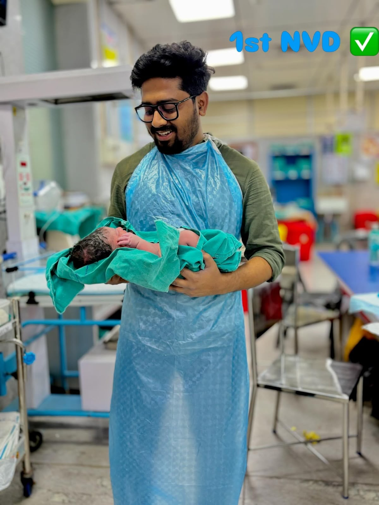
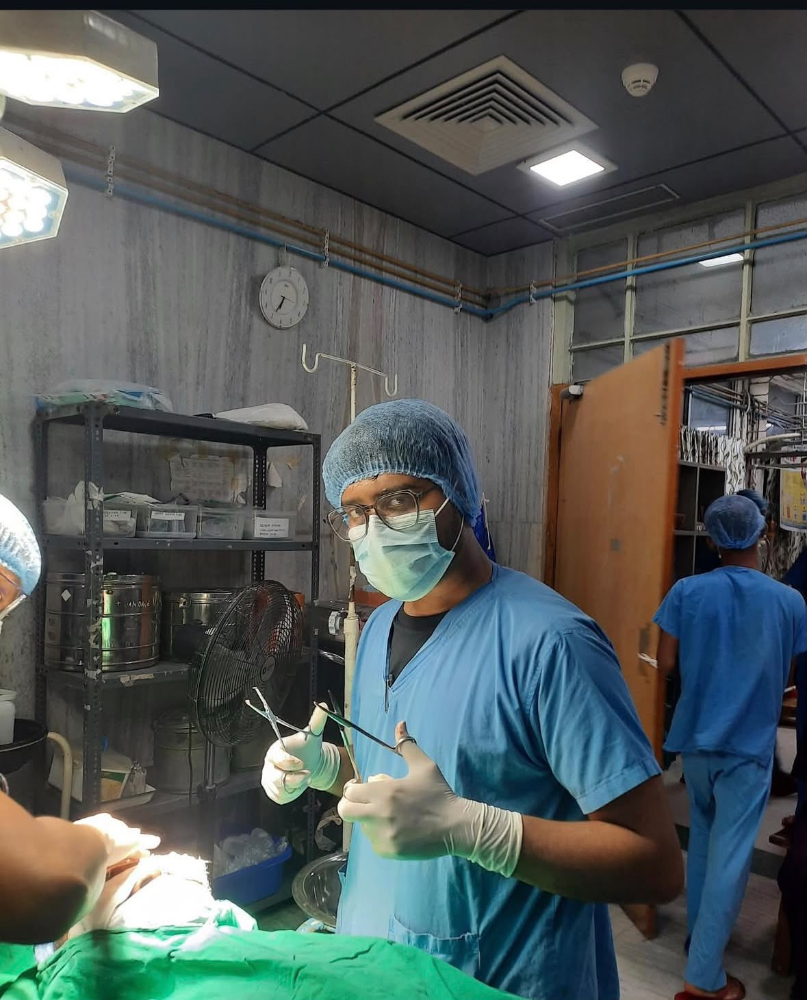
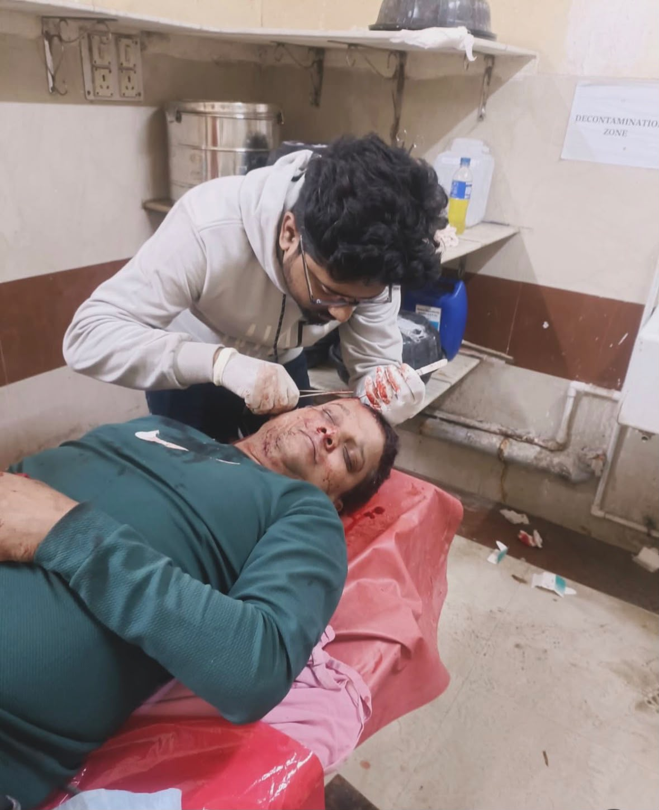
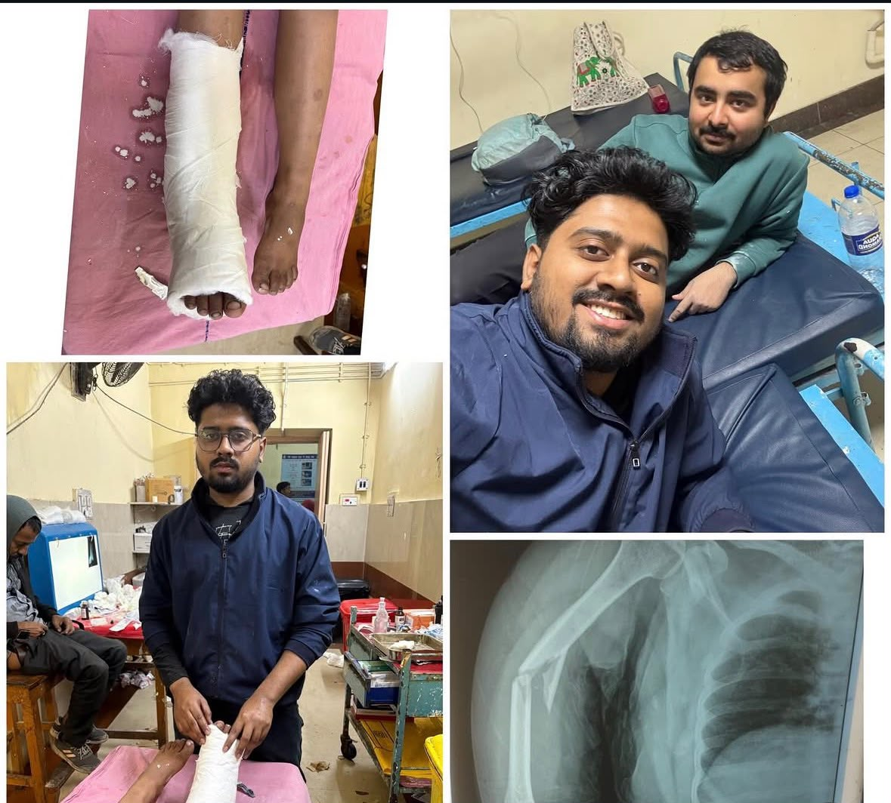
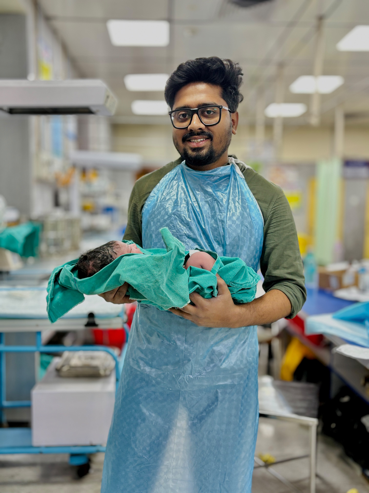
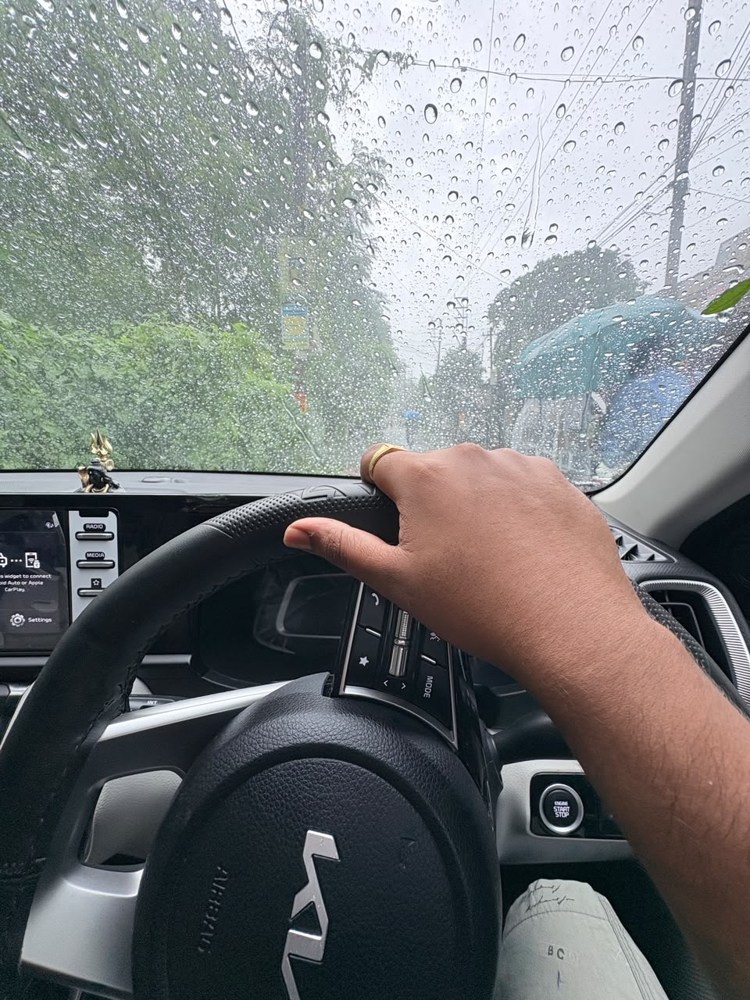
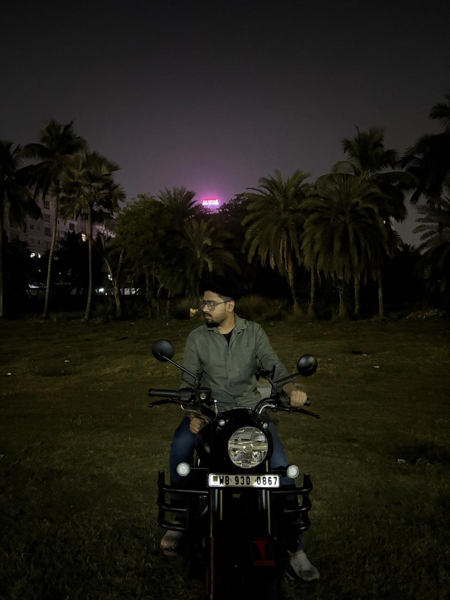

Cardiac Emergency Management
Rapid assessment and protocol-driven resuscitation for STEMI, NSTEMI, hypertensive crises, and cardiogenic collapse.
ICCU / EmergencyDedicated House Physician currently managing acute cardiac emergencies and advanced hemodynamics at the Intensive Cardiac Care Unit (ICCU). Alumnus of the historic Medical College Kolkata (estd. 1835).
A glimpse into the life of a physician — from intensive hospital wards to life beyond the white coat.

First Normal Vaginal Delivery (NVD) — unforgettable labor room moment.

Surgical scrubs on, precision instruments ready for procedure.

Hands-on acute facial laceration suturing & wound management.

Plaster casting, limb immobilization & diagnostic X-ray correlation.

Gentle hands delivering critical care to our tiniest fighters.

Raindrops on the windshield, peaceful drive & favorite playlist.
Late night open road cruise on the motorcycle under the stars.
Breathtaking snow-clad mountains & scenic northern valleys.
Sunny glacial breezes & recharging away from city hustle.
River Hooghly breezes overlooking the iconic Vidyasagar Setu.
Heritage evenings illuminated by the city's golden fountains.
Unwinding with friends, great conversations and laughter.

The quiet roads where thoughts clear and tomorrow begins.
Consistent merit, discipline, and top-tier rankings across medical entrance boards.
State-wide top tier rank in intensely competitive medical entrance exam.
Placed in the top national percentile among over a million candidates nationwide.
Distinction from Medical College Kolkata reflecting clinical & theoretical mastery.
Academic excellence in science board examinations with top physics and biology scores.
Hands-on acute cardiac management, life support, and continuous physiological monitoring.
Resuscitation protocol execution, emergency cardioversion, defibrillation, and post-arrest stabilization.
Precise infusion management of noradrenaline, dobutamine, and vasopressin for hemodynamic collapse.
Real-time diagnosis of STEMI/NSTEMI, VT/VF rhythms, complete heart blocks, and acute ischemia progressions.
Rapid arterial blood gas analysis, acid-base correction, oxygenation index tracking, and ventilatory adjustments.
Combining rigorous clinical discipline, precision diagnosis, and compassionate bedside patient care.
Dr. Atanu Saha is an accomplished medical professional and House Physician specializing in Intensive Cardiac Care. Graduating with Honours in MBBS from the historic Medical College Kolkata (estd. 1835), Asia’s premier medical seat, he brings a distinguished academic foundation and intense clinical training across high-volume tertiary care wards to acute medicine.
Currently stationed in the Intensive Cardiac Care Unit (ICCU), Dr. Saha manages high-stakes emergencies including acute coronary syndromes (STEMI/NSTEMI), cardiogenic shock, malignant arrhythmias, and acute decompensated heart failure. His practice is anchored in prompt evidence-based clinical decision-making, patient stabilization, and compassionate communication with families.
With top-tier merit rankings across state and national medical entrance boards, he remains continually committed to advancing medical knowledge, critical care expertise, and clinical therapeutics.
High-acuity medical management, critical resuscitation, and modern cardiology care.
Rapid assessment and protocol-driven resuscitation for STEMI, NSTEMI, hypertensive crises, and cardiogenic collapse.
ICCU / EmergencyDiagnostic proficiency in complex cardiac dysrhythmias, conduction blocks, axis deviations, and ischemic progressions.
DiagnosticsHemodynamic monitoring, vasoactive drug titration, arterial blood gas (ABG) analysis, and electrolyte homeostasis in unstable patients.
Critical CareApplication of the latest clinical guidelines in cardiology, internal medicine, and multi-organ supportive therapy.
Clinical ProtocolsConnect with Dr. Atanu Saha for consultations, medical exchanges, or social updates.
House Physician, ICCU
Medical College Kolkata
Kolkata, West Bengal, India